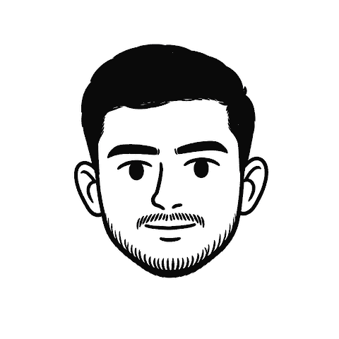
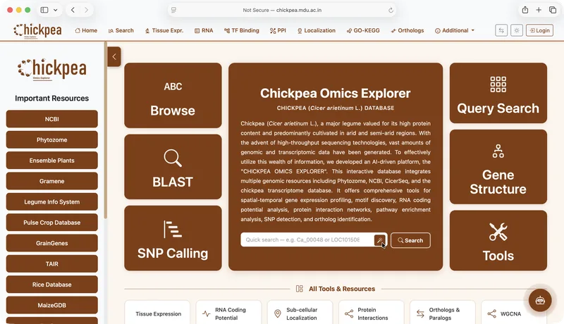

Research Engineer — AI/MLCenter for Biotechnology, MDU
Built and deployed an ML-assisted multi-omics platform for chickpea genomics, with SVM pipelines, automated ETL and Django dashboards on GCP.
AI / ML engineer · Research engineer
I build machine-learning pipelines, research platforms and cloud software, from genomic data tools to workflow automation.

About
I’m an AI & ML engineer with a B.Tech in Computer Science (AI & ML) from Maharshi Dayanand University, CGPA 3.78 / 4.00.
My work spans genomic data platforms, internal automation tools and hands-on AI teaching.
I work mainly in Python with scikit-learn, TensorFlow and PyTorch, and deploy on Google Cloud and Azure.
Built and deployed an ML-assisted multi-omics platform for chickpea genomics, with SVM pipelines, automated ETL and Django dashboards on GCP.
Built internal platforms, APIs and database workflows for counselling, application tracking and CRM.
Led weekly hands-on sessions on AI, ML, cloud and data science, and mentored student projects.
Supported machine learning, deep learning and big data labs using Python, MATLAB and Hadoop.
Selected work

Research
$ whoami
AI / ML engineer working across research platforms, cloud software and teaching.
$ cat profile.txt
I build ML pipelines, research platforms and cloud software.
$ select work
Five selected projects. Use the list or run open 1.
$ read papers.md
$ contact --short
For research roles, engineering work or collaboration.